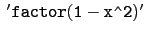
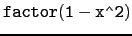

suivant: Interface texmacs
monter: La librairie giac et
précédent: Interface Xcas
Table des matières
Index
Depuis une fenêtre de commandes, on peut taper directement une commande
avec des quotes et précédée de
icas par exemple:
icas

ou encore taper icas , on obtient :
0» il suffit alors de taper des commandes par exemple :

on obtient :
(1-x)*(1+x)
1» etc...
ctrl D termine alors la session.
Remarque
On peut aussi taper :
icas nom_de_fichier
pour executer les commandes contenues dans nom_de_fichier.
Documentation de giac écrite par Renée De Graeve